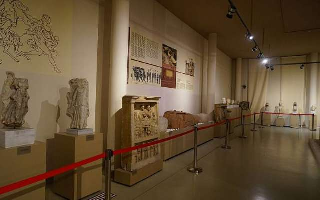

Ana sayfa › İl il gezilecek yerler › Bursa
Bursa'da Kültür Varlıkları rehberinde 21 yer var: 10 müze, 5 dini yapı, 3 kale & tarihi yapı, 1 ören yeri, 1 şelale, 1 kayak merkezi. Aşağıda öne çıkanları, haritayı ve tüm yerlerin listesini bulabilirsiniz.
⭐ Öne çıkanlar

1 · Bursa · MüzeBursa Arkeoloji Müzesi
Bursa Arkeoloji Müzesi, Kültürpark'ın yeşil alanı içinde, Bitinya ve Mysia bölgelerinin antik geçmişini tanıtır.

2 · Bursa · MüzeBursa Atatürk Evi Müzesi
Bursa Atatürk Evi Müzesi, Atatürk'ün Bursa ziyaretlerinde kaldığı, 19.

3 · Bursa · MüzeBursa Kent Müzesi
Bursa Kent Müzesi, Heykel'de eski adliye binasında 2004'ten beri hizmet verir.
🗺 Haritada
📍 Tüm yerler (21)
Müze (10)
Bursa Arkeoloji MüzesiMüzeBursa Atatürk Evi MüzesiMüzeBursa Kent MüzesiMüze Bursa Türk İslam Eserleri MüzesiMüze
Bursa Türk İslam Eserleri MüzesiMüze Mudanya Mütareke Evi MüzesiMüze
Mudanya Mütareke Evi MüzesiMüze Tofaş Anadolu Arabaları MüzesiMüze
Tofaş Anadolu Arabaları MüzesiMüze Yenişehir Şemaki Evi MüzesiMüze
Yenişehir Şemaki Evi MüzesiMüze İznik MüzesiMüzeNilüfer Hatun İmareti Türk İslam Eserleri MüzesiMüzeOsmanlı Evi MüzesiMüze
İznik MüzesiMüzeNilüfer Hatun İmareti Türk İslam Eserleri MüzesiMüzeOsmanlı Evi MüzesiMüze
Bursa Atatürk Evi MüzesiMüzeBursa Kent MüzesiMüzeBursa Türk İslam Eserleri MüzesiMüzeMudanya Mütareke Evi MüzesiMüzeTofaş Anadolu Arabaları MüzesiMüzeYenişehir Şemaki Evi MüzesiMüzeİznik MüzesiMüzeNilüfer Hatun İmareti Türk İslam Eserleri MüzesiMüzeOsmanlı Evi MüzesiMüzeDini Yapı (5)
 Bursa Ulu CamiiDini Yapı
Bursa Ulu CamiiDini Yapı Bursa Yeşil Cami ve Yeşil TürbeDini Yapı
Bursa Yeşil Cami ve Yeşil TürbeDini Yapı Bursa İznik Göl BazilikasıDini Yapı
Bursa İznik Göl BazilikasıDini Yapı Emir Sultan CamiiDini Yapı
Emir Sultan CamiiDini Yapı Muradiye KülliyesiDini Yapı
Muradiye KülliyesiDini YapıKale & Tarihi Yapı (3)


Ören Yeri (1)

Şelale (1)

Kayak Merkezi (1)

🏺 İlgili uygarlık rehberleri
👩🏫 Öğretmenler için
📄 Benim ilim: Bursa🚌 Bu ile okul gezisi planlaEtkinlik kâğıtları ▸